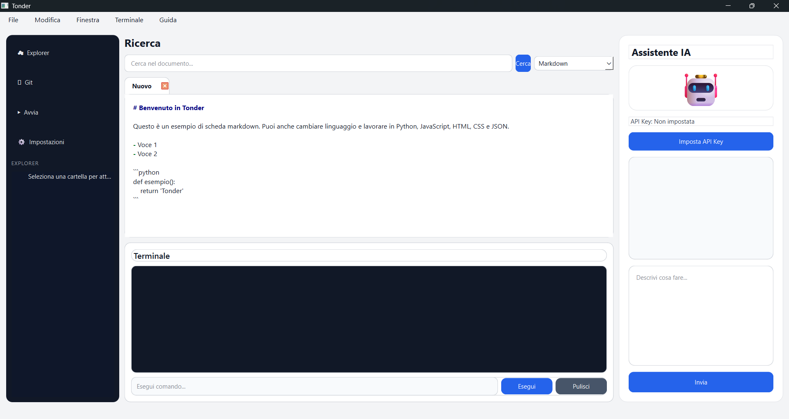
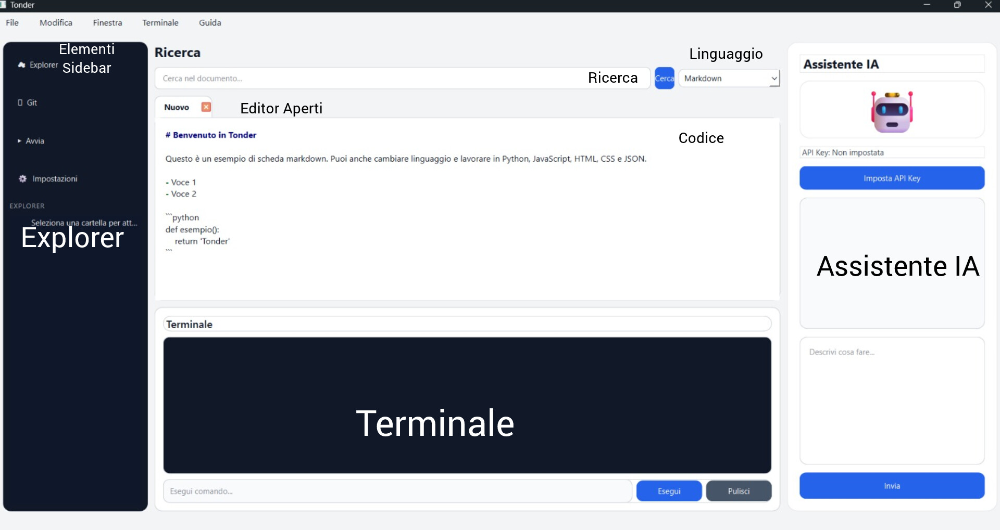

Il nuovo Editor moderno e con AI.
Installa ultima versione (Windows)Tonder è il nuovo Editor moderno e con AI.
A primo impatto, l'editor sarà così:

Sembrerà complicato, ma è semplice. Ecco una mappa:

Accanto al Codice, c'è la Sidebar.
Ha:
Per Tonder, markdown è il linguaggio speciale: è un pò l'anteprima visiva.
Ma Tonder supporta anche Python, JavaScript, HTML, CSS e JSON.
Tonder ha un pannello AI integrato. Per usarlo dovrete avere una chiave API OpenAI. Una volta configurata la chiave API, potrai iniziare a chattare.
Ha anche un terminale integrato. Potrete fare i comandi del terminale in Tonder.
Queste sono le informazioni che ci ha dato l'autore a riguardo dell'app. Puoi inviarci una email cliccando qui se qualcosa non ti quadra.
I dati personali vengono archiviati in modo sicuro, e includono:
NOTA: L'autore ha dichiarato che i dati vengono elaborati SOLO in locale.
L'autore ha dichiarato che ha un accesso ai file poco più del minimo, ovvero:
NOTA: L'autore ha dichiarato che può accedere sia a dati cloud sia a dati locali.
L'autore ha dichiarato che userà dati anonimi per migliorare i prodotti, come ad esempio programmi o nuove funzionalità.
Clicca per l'informativa della privacy in Italiano